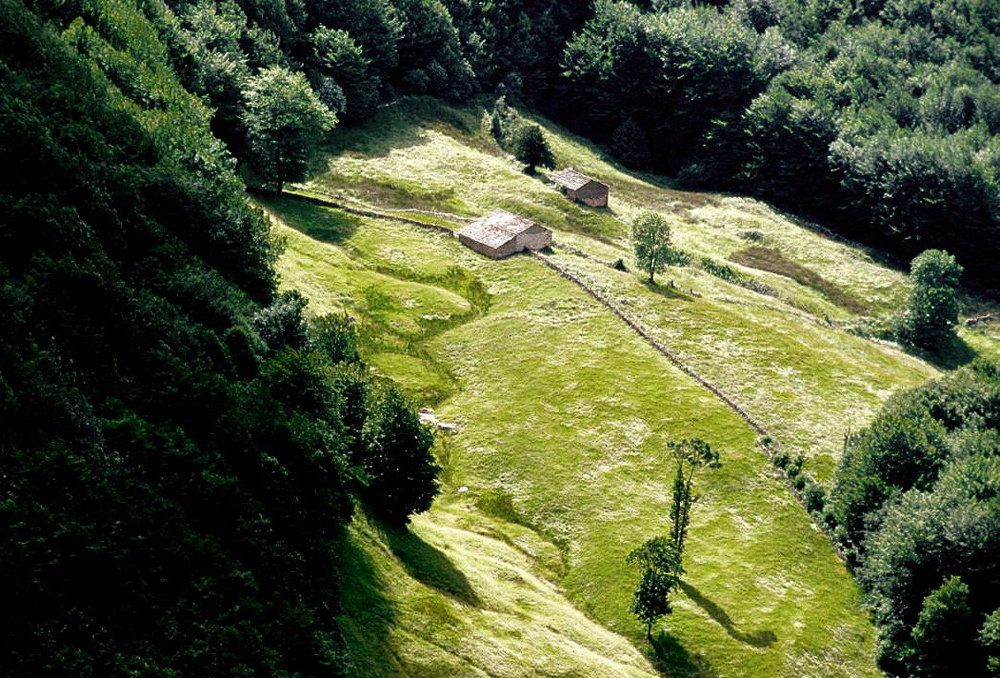
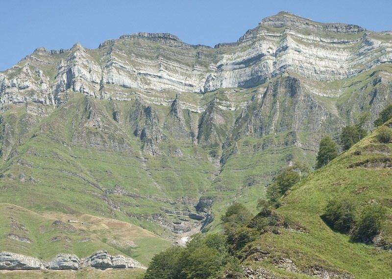

Los valles y montañas interiores
Criterios: PN 1.1, PN 6.2
🤔 Pienso5 min
Qué hago aquí: Piensa un momento y contesta con lo que ya sabes. No pasa nada si no lo sabes: es para empezar.
Piensa en un valle que conozcas. ¿Qué hay en el fondo? ¿Y en las laderas? ¿Y arriba del todo?
📖 Leo y aprendo15 min
Qué hago aquí: Lee despacio, mira los dibujos y los ejemplos, y quédate con la idea clave del final.
Entre la cordillera y la costa, los ríos han excavado valles que van de sur a norte, como los dedos de una mano: Liébana (Deva), Nansa, Saja, Besaya, Pas, Miera y Asón. Cada valle es un mundo: tiene sus pueblos, su forma de hablar, sus fiestas y su paisaje.
Entre los valles se levantan montañas interiores, más bajas que la cordillera pero muy importantes en el paisaje: la Sierra del Escudo, la Peña Cabarga junto a la bahía de Santander, los Montes de Pas con el Castro Valnera (más de 1700 m) y las montañas de Soba y del Asón.

Foto: LBM1948 · CC BY-SA 4.0 · Valles Pasiegos 1998 07.jpg

Foto: jroblear · CC BY-SA 2.0 · Castro Valnera Cantabria.jpg
✏️ Hago25 min
Qué hago aquí: Haz las actividades en orden. Empieza siempre por las básicas.
Escribe los valles de Cantabria de oeste a este con el río de cada uno. Explica por qué todos tienen la misma dirección.
Explica el aprovechamiento de un valle por pisos: qué hay en el fondo, en las laderas y en las cumbres, y por qué cada uso está a esa altura (temperatura, pendiente, agua, nieve).
Explica la muda pasiega: qué es, por qué se hacía y qué huella ha dejado en el paisaje.
Nombra tres montañas interiores y explica qué diferencia hay entre ellas y la cordillera (altura, posición, papel en el paisaje).
Compara el poblamiento de los Valles Pasiegos (cabañas dispersas) con el de Liébana (pueblos concentrados). ¿Qué ventajas e inconvenientes tiene cada uno para la vida diaria y para los servicios de hoy?
Muchas cabañas pasiegas están abandonadas. Propón dos usos nuevos que respeten el paisaje y explica qué normas pondrías para que no se pierda su valor de patrimonio.
Dibuja el corte transversal de un valle y señala con flechas el recorrido del ganado a lo largo del año (invierno, primavera, verano, otoño).
✏️ Puedes responder escribiendo, con un dibujo o un esquema, o contándolo en voz alta.
🚀 Amplío (si quieres saber más)
Qué hago aquí: ¿Has terminado? Lee la curiosidad o elige el reto. Es voluntario.
Investiga la economía de tu valle hace cien años y hoy. Entrevista a un familiar mayor y completa una tabla con antes / ahora para: trabajo, transporte, población, uso de los prados y fiestas. Termina con una conclusión: ¿qué patrimonio se ha perdido y qué se conserva?
✅ Compruebo5 min
Qué hago aquí: Contesta sin mirar la ficha y marca cómo lo llevas.